Linear Algebra Group Assignment
Authors: Tyce Olaveson and Levi Moats Class: Physics 530 Professor: Dr Transtrum Date: 02/26/2024
Consider the one dimenstional boundary value problem that arises in fluid dynamics
![$$-u''(x) + V(x)u'(x) = f(x), x\in[0,1]$$](main_eq12625388480741236538.png)
where

where we will take to be constants: 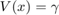 and 
Contents
Problem Formulation
a) Using a test function  , the above boundary value problem can be rewritten in the weak form as the following:
, the above boundary value problem can be rewritten in the weak form as the following:
where
![$$A_1[\phi,u] = \int_{0}^{1} \phi' \cdot u' dx$$](main_eq12445790906574176086.png)
![$$F[\phi] = \int_{0}^{1} f \cdot \phi dx$$](main_eq05804388856437582391.png)
b) The "hat" functions from class, , can be used to aproximate  using linear combinations: 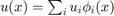. This allows the weak form of the boundary value problem to be written in the form:
using linear combinations: 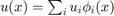. This allows the weak form of the boundary value problem to be written in the form:

where

From above
By evaluating the above integrals, it can be easily shown that  is a symetric tridiagonal matrix with on the diagonal and on the off diagonals.
is a symetric tridiagonal matrix with on the diagonal and on the off diagonals.  is a skew-symmetric tridiagonal matrix with 0 on the diagonal,
is a skew-symmetric tridiagonal matrix with 0 on the diagonal,  on the upper off diagonal, and on the lower off diagonal.
on the upper off diagonal, and on the lower off diagonal.
Similarly, it can be readily calculated that 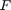 is an 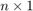 vector where all the values are  .
.
c) A function CalcAandb.m has been written and is included in this repository. It accepts and  as inputs and returns a sparse A matrix and
as inputs and returns a sparse A matrix and
Implement the GMRES algorithm
Examples from the text: A = [1 4 7; 2 9 7; 5 8 3]; b = [1;8;2]; x = [-2.18; 1.84; -0.6] b = [2;3;9]; x = [-2.1; -0.22; 0.11] b = [5;-3;8]; x = [4.8; -2.6; 1.5]
A = [1 4 7; 2 9 7; 5 8 3];
b = [1;8;2]; x = [-2.18; 1.84; -0.6]; x0 = zeros([3,1]); M = eye(3);
[xfit,er,V,H] = mygmres(3,b,x0,3,M,A);
disp(round(xfit,2))
disp(norm(er))
b = [2;3;9]; x = [-2.1; -0.22; 0.11]; x0 = zeros([3,1]); M = eye(3);
[xfit,er,V,H] = mygmres(3,b,x0,3,M,A);
disp(round(xfit,2))
b = [5;-3;8]; x = [4.8; -2.6; 1.5]; x0 = zeros([3,1]); M = eye(3);
[xfit,er,V,H] = mygmres(3,b,x0,3,M,A);
disp(round(xfit,2))
disp(' ')
break
-2.18
1.84
-0.59
1.2583e-15
break
2.08
-0.22
0.11
break
4.8
-2.56
1.49
Solving the FEM problem
Use your GMRES function to solve the finite-element formulation of the variational problem for the cases and using as the identity matrix. For each case, run with  and
and  increasing until the error (i.e., the norm of the residual divided by ) is below
increasing until the error (i.e., the norm of the residual divided by ) is below  . Plot your most accurate solution (as a function of x) as well as teh error versus functions of and .
. Plot your most accurate solution (as a function of x) as well as teh error versus functions of and .
% define arrays ns = [16,32,64,128]; % number of basis functions to use ls = 2.^(1:7); % number of iterations Vs = {@(n) 1, @(n) n+1}; % set of different (constant) functions for errors = zeros([length(ls),length(ns),length(Vs)]); % empty matrix to store the errors solutions = cell(size(errors)); % empty cell array to store the solutions after they have been calculated xplot = cell([length(ns),1]); for i = 1:length(ns) xplot{i} = 0:1/(ns(i)+1):1; end % loop through each case for i = 1:length(Vs) V = Vs{i}; for j = 1:length(ns) n = ns(j); for k = 1:length(ls) l = ls(k); % create the input matrices [A,b] = CalcAandb(n,V(n)); [x,errors(k,j,i),~,~] = mygmres(l,b,zeros([n,1]),n,eye(n),A); solutions{k,j,i} = [0;x;0]; end % k = 1:length(ls) end % j = 1:length(ns) end % i = 1:length(Vs)
Produce the plot for
sq=squeeze(errors(:,:,1)); figure [X,Y] = meshgrid(ns,ls); surf(X,Y,sq) ax=gca; ax.ZScale = 'log'; title("V(x) = 1","FontSize",16) ylabel("l","FontSize",14) xlabel("n","FontSize",14) zlabel("Error","FontSize",14) view([143.7,25.8]) %zlim([1e-6 max(sq,[],"all")+max(sq,[],"all")*0.05]) hold on Hplane = surf(X,Y,1e-6*ones(size(X))); Hplane.EdgeColor = 'none'; Hplane.FaceAlpha = 0.5; snapnow; figure() for i = 1:length(ns) plot(xplot{i},solutions{7,i,1},'.-') hold on end legend(string(ns)) hold off xlabel('x') ylabel('u')
Produce the plot for
sq=squeeze(errors(:,:,2)); figure surf(X,Y,sq) ax=gca; ax.ZScale = 'log'; title("V(x) = n+1","FontSize",16) ylabel("l","FontSize",14) xlabel("n","FontSize",14) zlabel("Error","FontSize",14) view([143.7,25.8]) %zlim([1e-6 max(sq,[],"all")+max(sq,[],"all")*0.05]) hold on Hplane = surf(X,Y,1e-6*ones(size(X))); Hplane.EdgeColor = 'none'; Hplane.FaceAlpha = 0.5; snapnow; figure() for i = 1:length(ns) plot(xplot{i},solutions{7,i,2},'.-') hold on end legend(string(ns)) hold off xlabel('x') ylabel('u')
break break break break break break break break break break break break break break break break break break break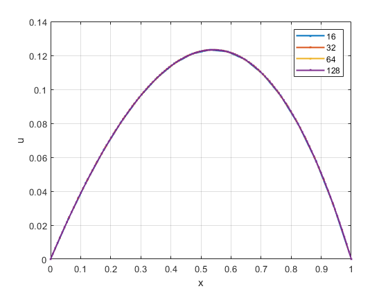 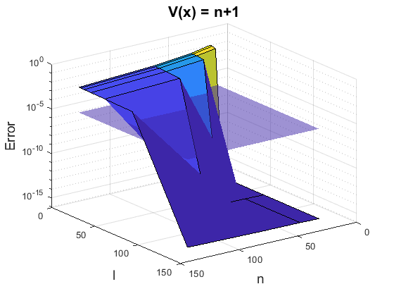
Preconditioning the GMRES
a) Simple derivation here Let be a solution to . We now left multiple both sides by  to get 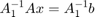 which is equivalent to by definition of and . Thus is a solution to the preconditioned problem.
to get 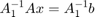 which is equivalent to by definition of and . Thus is a solution to the preconditioned problem.
Now suppose that is a solution to the preconditioned problem : . We multiply both sides by and expand to get: 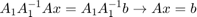. Thus the solution to the preconditioned problem is also a solution to the original problem.
b) and are easy to calculate be cause they are both derived using . is a symetric tridiagonal matrix making it very easy to find the invers reguardless of size using a variety of algorithms.
c) Repeat problem 3 using the preconditioned matrix.
% define arrays ns = [16,32,64,128]; % number of basis functions to use ls = 2.^(1:7); % number of iterations Vs = {@(n) 1, @(n) n+1}; % set of different (constant) functions for errors = zeros([length(ls),length(ns),length(Vs)]); % empty matrix to store the errors solutions = cell(size(errors)); % empty cell array to store the solutions after they have been calculated xplot = cell([length(ns),1]); for i = 1:length(ns) xplot{i} = 0:1/(ns(i)+1):1; end % loop through each case for i = 1:length(Vs) V = Vs{i}; for j = 1:length(ns) n = ns(j); for k = 1:length(ls) l = ls(k); % create the input matrices [A,b,M] = CalcAandb(n,V(n)); % convert to the pre-conditioned problem. Atilde = M\A; % This solves the problem M Atilde = A btilde = M\b; % disp([cond(A), cond(Atilde)]) [x,errors(k,j,i)] = mygmres(l,btilde,zeros([n,1]),n,eye(n),Atilde); solutions{k,j,i} = [0;x;0]; end % k = 1:length(ls) end % j = 1:length(ns) end % i = 1:length(Vs)
Produce the plot for
sq=squeeze(errors(:,:,1)); figure [X,Y] = meshgrid(ns,ls); surf(X,Y,sq) ax=gca; ax.ZScale = 'log'; title("V(x) = 1","FontSize",16) ylabel("l","FontSize",14) xlabel("n","FontSize",14) zlabel("Error","FontSize",14) view([143.7,25.8]) %zlim([1e-6 max(sq,[],"all")+max(sq,[],"all")*0.05]) hold on Hplane = surf(X,Y,1e-6*ones(size(X))); Hplane.EdgeColor = 'none'; Hplane.FaceAlpha = 0.5; snapnow; figure() for i = 1:length(ns) [~,mind] = min(errors(:,i,2)); plot(xplot{i},solutions{mind,i,1},'.-') hold on end legend(string(ns)) hold off xlabel('x') ylabel('u') title('V(x) = 1')
Produce the plot for
sq=squeeze(errors(:,:,2)); figure surf(X,Y,sq) ax=gca; ax.ZScale = 'log'; title("V(x) = n+1","FontSize",16) ylabel("l","FontSize",14) xlabel("n","FontSize",14) zlabel("Error","FontSize",14) view([143.7,25.8]) %zlim([1e-6 max(sq,[],"all")+max(sq,[],"all")*0.05]) hold on Hplane = surf(X,Y,1e-6*ones(size(X))); Hplane.EdgeColor = 'none'; Hplane.FaceAlpha = 0.5; snapnow; figure() for i = 1:length(ns) [~,mind] = min(errors(:,i,2)); plot(xplot{i},solutions{mind,i,2},'.-') hold on end legend(string(ns)) hold off xlabel('x') ylabel('u') title('V(x) = n+1') % c) condition numbers cond(A) cond(Atilde)
The rate of convergence for the precodnitioned GMRES problem was much faster than the previous one. For the final case, the first 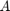 matrix has a condition number of 324 while has a conditon number of 220. This same trend is similar for all the other and pairs. This indicates that the preconditioning makes the problem more stable and moves the solution into a basis that is naturally compatible with the nature of the problem itself.
break Warning: Rank deficient, rank = 16, tol = 4.385937e-15. break Warning: Rank deficient, rank = 16, tol = 4.385937e-15. break Warning: Rank deficient, rank = 16, tol = 4.385937e-15. Warning: Rank deficient, rank = 30, tol = 7.624260e-15. break Warning: Rank deficient, rank = 32, tol = 8.548413e-15. break Warning: Rank deficient, rank = 32, tol = 8.548413e-15. Warning: Rank deficient, rank = 30, tol = 7.626050e-15. Warning: Rank deficient, rank = 58, tol = 1.502101e-14. break Warning: Rank deficient, rank = 64, tol = 1.710084e-14. Warning: Rank deficient, rank = 30, tol = 7.626516e-15. Warning: Rank deficient, rank = 58, tol = 1.502193e-14. Warning: Rank deficient, rank = 113, tol = 2.981274e-14. break Warning: Rank deficient, rank = 16, tol = 1.972058e-14. break Warning: Rank deficient, rank = 16, tol = 1.972058e-14. break Warning: Rank deficient, rank = 16, tol = 1.972058e-14. break Warning: Rank deficient, rank = 32, tol = 7.201906e-14. break Warning: Rank deficient, rank = 32, tol = 7.201906e-14. Warning: Rank deficient, rank = 63, tol = 2.709137e-13. break Warning: Rank deficient, rank = 64, tol = 2.792495e-13. Warning: Rank deficient, rank = 125, tol = 1.066764e-12.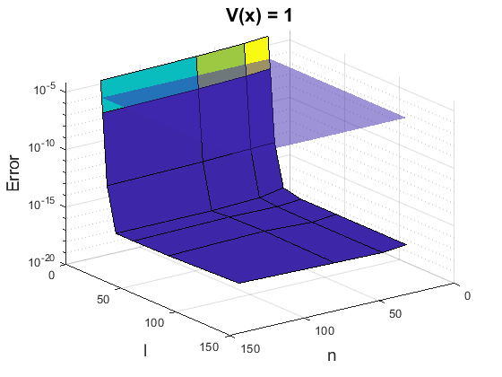 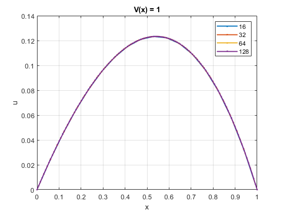
ans =
323.98
ans =
220.16
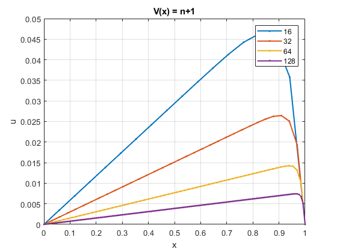